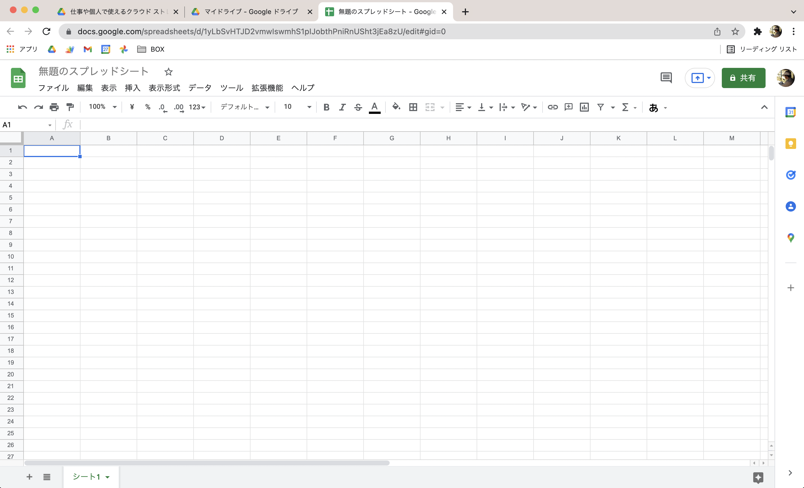

【初心者向け】データ管理に便利なGoogleスプレッドシートの特徴

執筆者

⬇︎記事をシェアする
今回の記事では、業務データの整理に便利な 「Googleスプレッドシート」 の特徴について、これから始める方向けに解説していきます。
読者の中には、同じ「表計算ソフト」のジャンルにある「Microsoftのエクセル」を活用している方も多いのではないかな、と思います。
なのでエクセルとの比較も交えながら、メリットやデメリットなどを紹介していきたいと思います！
Googleスプレッドシートとは
スプレッドシートとは一言で言うと、 Google社が提供している「表計算ソフト（アプリ）」 のことです。
⬇︎公式ページ
オンラインでスプレッドシートを作成、編集できる無料サービス
表計算ソフトというと、Microsoftのエクセルのようなズラーっとマス目が並んだ画面をまず思い浮かべるかと思います。

スプレッドシートもその仲間なので、ひとまずは「エクセルとだいたい同じような画面で同じような仕事ができる」とイメージしておいてください。
ただここで、スプレッドシートには大きな特徴があります。
それは 「インターネットを使って全ての機能を活用できる」 ということです。
これにより、専用のアプリをインストールする必要がなく、Webブラウザ上で動かすことになります。
なのでWindowsやMacなど、どのOSを使っていてもすぐに使い始めることができます。
また、このスプレッドシートはGoogleドライブ同様、無料で活用できちゃうのも魅力的なポイントです。
表計算ソフトの役割とできること
ところで、そもそも「表計算ソフト」を使うとどんなことができるのでしょうか？
一度ここで、改めてその役割を確認しておきましょう
表計算ソフトとは 「数値データの集計・分析に用いられるアプリケーションソフトウェア」 のことです。
（引用：Wikipedia）
めんどくさい複雑な計算や集計などを自動で行ってくれたり、数値データに限らず綺麗にレイアウトした見やすい表を作ったり、グラフやカテゴリごとの集計表を作成して分析することができる・・・などなど、使いこなせるようになるととても便利なツールです。
・・・というのが本来の表計算ソフトの役割なのですが、このブログでは複雑な計算をしたりグラフを作ったり、という使い方については、基本的にはあまり触れません。
それよりも、 身の回りのデータを管理できる「簡易的なデータベース」 として表を使っていく、という活用がメインになってきます。
【NOTE】
データベースという用語についての詳細は省きますが、ここでは 「パソコンが扱いやすいデジタルデータの形で身の回りの情報を整理して、いつでも追加したり取り出しやすくできるもの」 くらいのイメージで捉えておけばバッチリです。
スプレッドシートのメリットとデメリット
話をスプレッドシートに戻しますね。
先ほど、「スプレッドシートもエクセルも同じような仕事ができる表計算ソフトである」というお話をしました。
ですが、できることは同じでもそれぞれ違った特徴があります。
エクセルもスプレッドシートも、どちらも得意・不得意な分野があるのですね。
大きな違いとして「スプレッドシートはインターネットを使って全ての機能を活用できる」という特徴を先ほどご紹介しました。
これによるメリットとしては、
- 複数端末で利用できる
- 複数人での共有・共同編集も簡単にできる
- 他のGoogleサービスやアプリとの連携がやりやすい
というようなことが挙げられます。
・・・なんだか、こちらの記事で見たドライブの利点と似ていると思いませんか？
それもそのはず、作成したファイルは自身のドライブの中に保存されるため、ドライブの利点がそのままスプレッドシートの利点にもなるのです。
一方で、スプレッドシートのデメリットもいくつかあります。
- 通信環境によりエクセルよりも操作が遅い場合がある
- 印刷の設定があまり細かくできない
それぞれ使い込んでいくともっと色々と違いはあるので、用途によって使い分けるのがベストですね。
このブログの目的は、ITツールによる身の回りのデジタル化を進めることです。
そのためには、 インターネットを通じて他のアプリと連携しやすいスプレッドシートを使うのをオススメ します。
おわりに
さて、今回は一旦こんなところでしょうか。
これから始める方向けに、Googleスプレッドシートの特徴をカンタンに見てきました。
次回は、実際にスプレッドシートを作成してみたいと思います。
⬇︎記事をシェアする